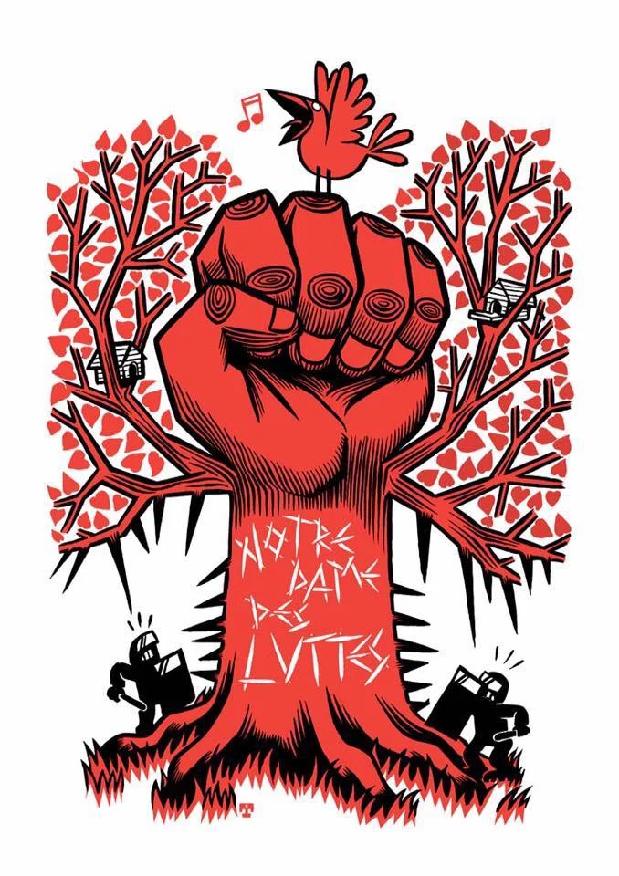

Communiqué fédéral
Notre-Dame-des-Landes. Notre appel à éviter le recours à la force
Date indiquée par Facebook · 19 janvier 2018
Repères éditoriaux
En janvier 2018, nous avons dénoncé la tentation de la force du gouvernement. Notre communiqué d’avril permet de retrouver la suite de cette prise de position.
Texte conservé avec la publication
Notre-Dame-des-Landes : le PCF79 dénonce la tentation de la force par le gouvernement
Le PCF79 se félicite de l’abandon par le gouvernement du projet de Notre-Dame-des-Landes, fruit d’une mobilisation sans faille et dans la durée de milliers de militant.es. Ce projet contre nature n’était viable ni écologiquement ni socialement. Les communistes deux-sévriens, qui réclamaient la fin de ce projet, soutiennent toutes les initiatives permettant aux militant.es qui le souhaitent de s’installer sur les terres laissées en friches sur la zone. Ils/elles s’opposeront également à l’usage de la force par le gouvernement et à la criminalisation des opposants par Gérard Collomb, le ministre de l’Intérieur. Plutôt que de mettre en place un arsenal répressif pour le printemps, le gouvernement d’Emmanuel Macron doit s’inspirer des solutions pacifiques mises en œuvre dans les années 80 dans le Larzac avec une réallocation des terres agricoles conduite par l’Etat.

Sources
Archive rouge · export Facebook · AR-0002-FB-02120
À lire aussi · Notre-Dame-des-Landes. Le PCF 79 dénonce l’intervention du gouvernement